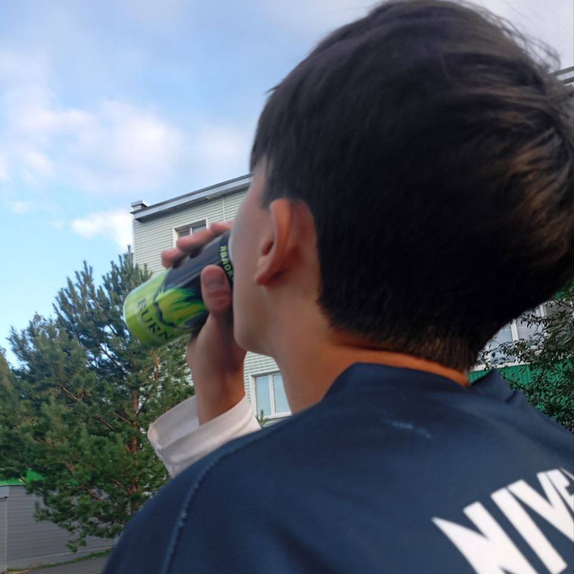
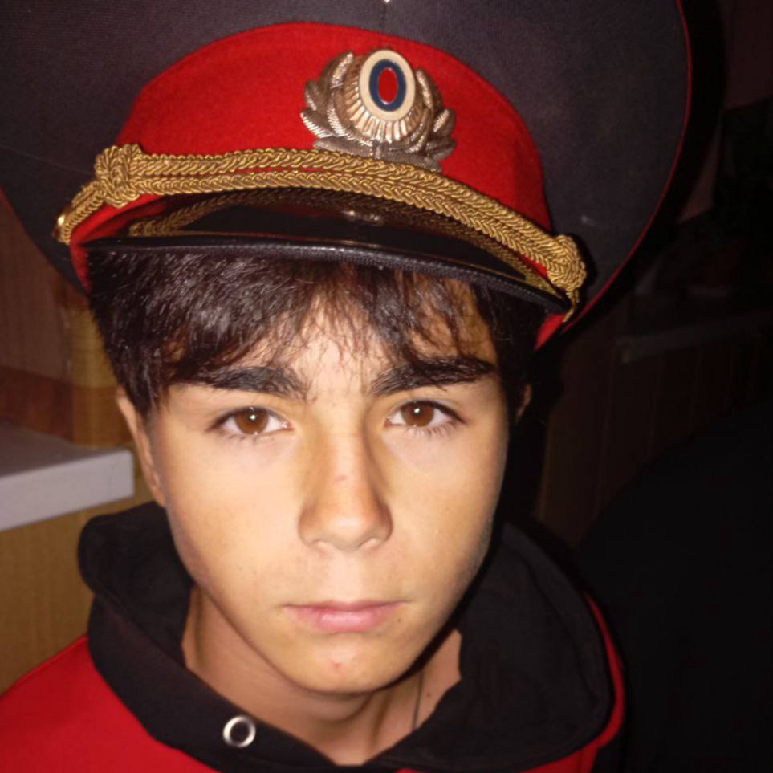
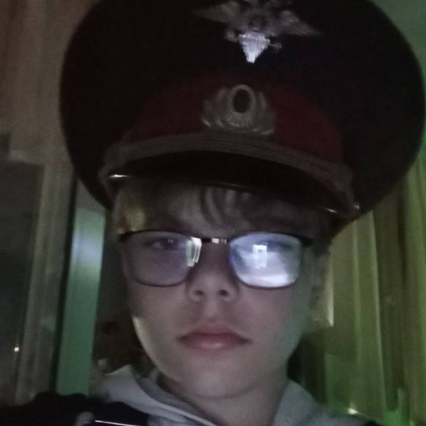
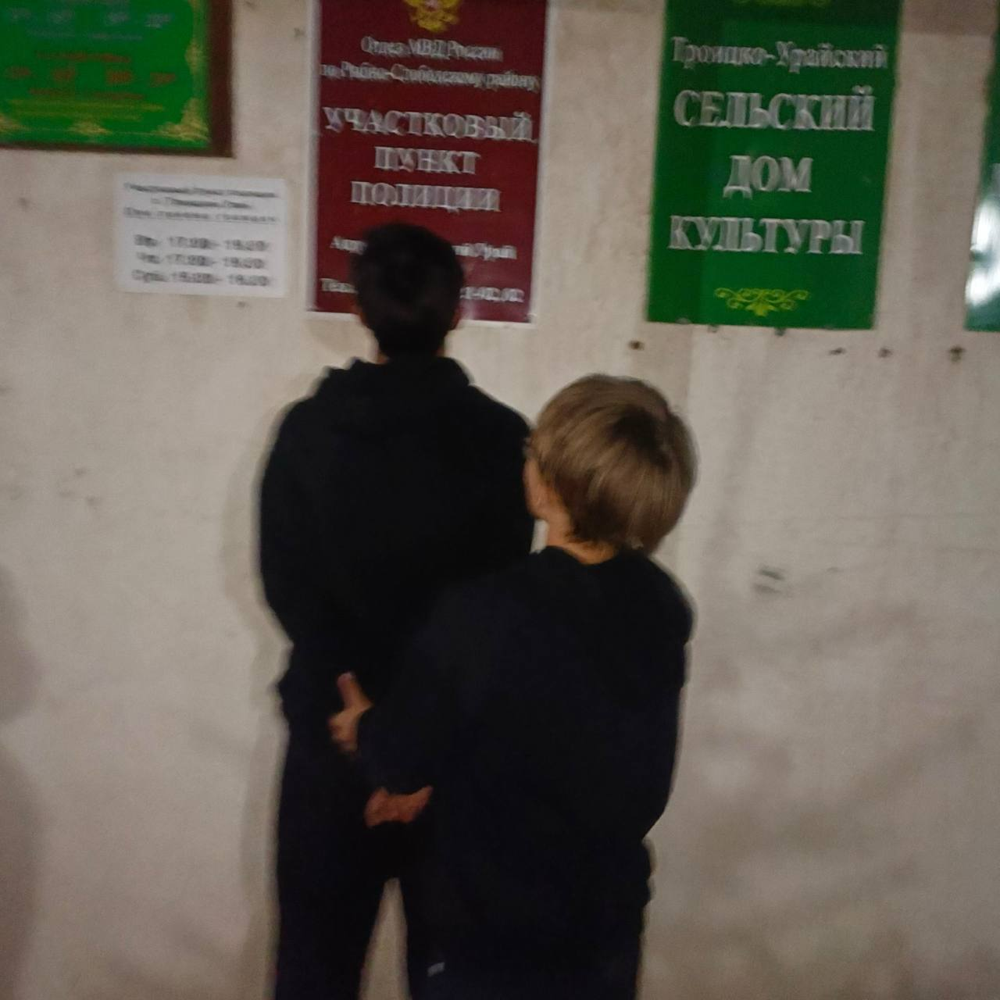
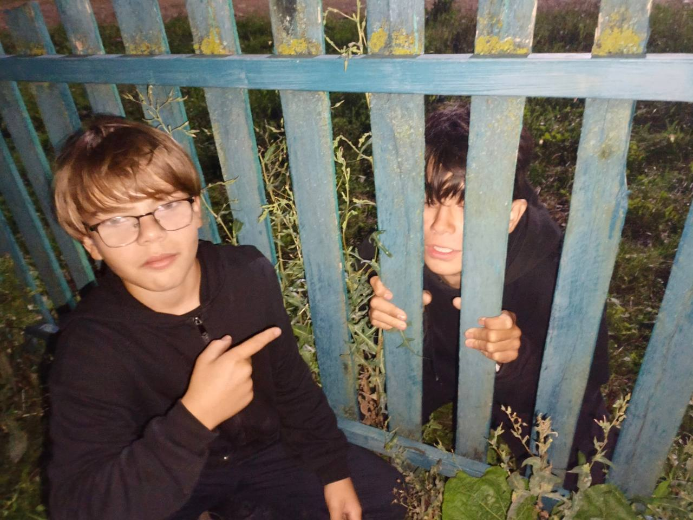

Всё это время Григорий тайно употреблял энергетические напитки, скрывая это от всех и систематически подставляя Артёма. Нашему корреспонденту удалось запечатлеть этот факт с помощью скрытой съёмки, что проливает свет на истинное поведение Григория.
Помимо энергетических напитков, у Григория было замечено странное поведение, вызывающее вопросы о возможном употреблении других веществ. Альтернативная версия — сильное недосыпание, однако свидетельства говорят сами за себя. Фото было сделано нашим генерал-майором полиции ГИБДД во время специальной операции.
Всё это время Артём добросовестно работал в ГИБДД в звании майора, и в результате расследования его не только реабилитировали, но и повысили в должности. Григорий же был уволен за сотрудничество с ОПГ и систематические подставы коллеги. Теперь Артём получил звание подполковника ГИБДД и продолжает службу на благо общества.
Артём лично участвовал в задержании Григория, который был уличен в работе на организованную преступную группировку. Григорий создавал фейковые компроматы на коллег и получал за это денежное вознаграждение. Его действия наносили ущерб репутации правоохранительных органов и подрывали доверие граждан.
После тщательного расследования и сбора доказательств, Григорий был осуждён и помещён в следственный изолятор. Артём, проявивший стойкость и профессионализм, лично контролировал процесс обеспечения правопорядка. Это дело стало показательным примером борьбы с коррупцией в рядах правоохранительных органов.
вазелиновые долбиловичи на проперженном диуане БЭЭЭУ